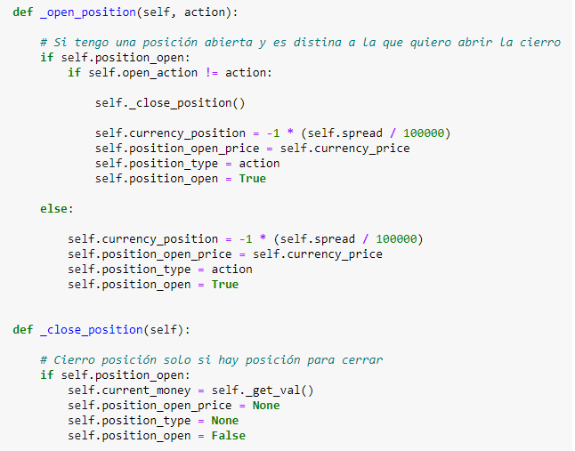

El ambiente es el entorno virtual con el cual nuestro agente va a interactuar, realizando sus acciones en base a la información que el mismo le propone y, de ser necesario, cambiando según la acción tomada por el agente.
En nuestro caso el ambiente va a tener que simular toda la interacción con el par que vamos a tradear.
Como mínimo nuestro ambiente debe:
- Darnos información sobre si mismo de manera tal que el agente pueda usarla para tomar decisiones.
- Devolvernos el resultado de la acción que tomamos.
En nuestro caso las acciones que vamos a poder tomar van a ser:
Antes de iniciar, para programar mi ambiente, tome como inspiración el ambiente programado en el curso: Artificial Intelligence: Reinforcement Learning in Python dictado en udemy.
Iniciamos el desarrollo de nuestro ambiente definiendo la cantidad de pasos que va a dar nuestro agente y la cantidad de indicadores que vamos a usar.
En nuestro caso, vamos a usar 23 indicadores. De estos, 20 van a pertenecer a representar los 20 precios de apertura anteriores, 2 para representar categóricamente si tenemos una orden de compra o venta abierta, y el va a tener el valor de nuestro trade abierto actualmente.
Posteriormente definimos nuestras acciones, el tamaño de nuestro espacio de acciones y el estado inicial de nuestras variables de posición.
Finalmente llamamos el procedimiento de nuestra clase: reset(). El cual va a dejar todas las variables de nuestro entorno a momento 0.
Iniciación de nuestra clase de ambiente:
Función que ejecutamos al final para llevarnos al momento 0 del ambiente:
Notese que la función reset previamente definida devuelve una llamada a otra función de nuestro ambiente llamada _get_obs()
La función _get_obs va a devolver los 23 indicadores que representan nuestro estado actual en el ambiente. Estos indicadores van a ser los que vamos a usar para alimentar nuestro modelo:
Ahora vamos a crear nuestras funciones para abrir y cerrar posiciones en el ambiente.
Pero antes de mostrarlas, hay un detalle sobre como nuestra agente va a interpretar sus acciones.
Una vez abierta nuestra posición, para mantenerse abierta, nuestro agente debera repetir la acción de la posición hasta que decida cambiarla.
Es decir, si nuestro agente decide realizar una posición de compra, en cada paso que da nuestro agente en el ambiente, vamos a tener que repetir la acción de compra si queremos mantener esta acción abierta.
Si decidimos abrir una posición de venta o ninguna de las dos, entonces nuetro agente va a cerrar la posición de compra que tenemos abierta.

También vamos a necesitar una función que retorne el valor actual en dinero de mi posición:
Finalmente, necesitamos definir la función que se encarga de interactuar directamente con nuestro ambiente, haciendo que pase de un estado a otro.
Esta función toma como parametro una acción y una vez computada su efecto en el estado actual de nuestro ambiente, nos regresa el nuevo estado resultante de esa acción, el reward, y si fue el último paso:
Finalmente, nuestra función de ambiente se debería ver algo así: